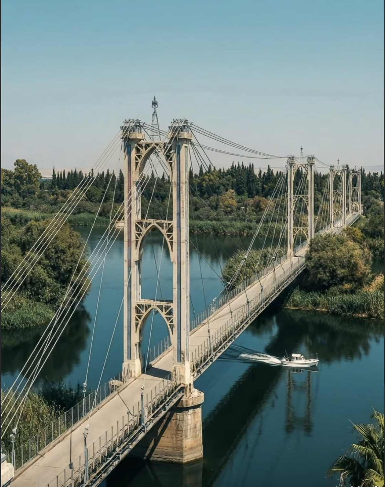
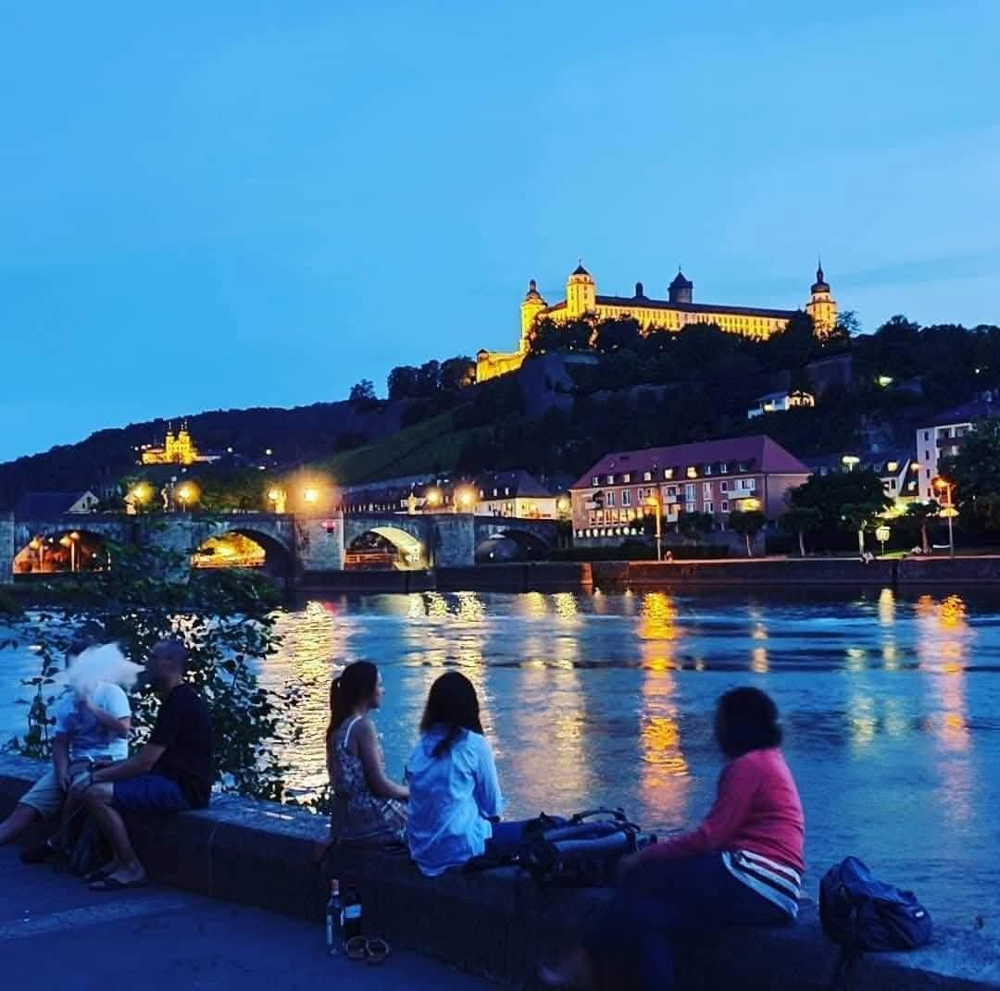

جسر دير الزور المعلق / Hängebrücke von Deir ez-Zor

قلعة مارينبيرغ - فورتسبورغ / Festung Marienberg - Würzburg
شاعر وباحث سوري مختص في علم العروض المقارن بين العربية والألمانية، ومؤلف يعمل على مد الجسور الأدبية بين الثقافتين.
Syrischer Dichter und Forscher, spezialisiert auf vergleichende Prosodie zwischen Arabisch und Deutsch.مؤلف كتاب "Richtige Rhythmen für echte Gedichte" (2024). كتبي متاحة عبر:
نقيم الأمسيات الشعرية، الندوات الثقافية، وقراءات الشعر في المدارس الألمانية.
Lesungen an Schulen, Lyrikabende und Kulturseminare.